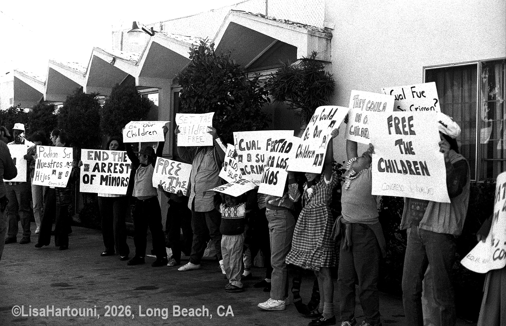

A look back at press coverage from 2014. This post uses direct quotes from Lisa's 2014 interview and historical facts. The full article is linked below.

When Phillip Zonkel's feature ran in the Press-Telegram in November 2014, it was the first time this body of work had been covered in depth by a local publication. I'm sharing it here again — with excerpts from my interview — because the photographs it described have spent the past year offline, and because the issues they document are no less current.
Long before From Here to Manzanar, one of my first Long Beach exhibits looked back at an earlier chapter of detention: photographs I took in 1987 at the Mardi Gras Motel in Inglewood, which the INS was then using as a private facility to hold immigrant families.
In 2014, the Press-Telegram ran a feature by Phillip Zonkel on that exhibit — "INS Detention Centers" — when it went up at Hot Java coffee shop on Broadway. It ran alongside two other series of mine from the same years: one on voting rights in Alabama's Black Belt, and one on police abuse in Los Angeles between 1987 and 1992.
The agency was detaining children — some of them U.S. citizens — to draw out their parents. Across the country, an estimated 170 such facilities were operating at the time.
I told reporter Phillip Zonkel: "I was shocked, but I was also pretty disturbed that the government would go to such great lengths to essentially kidnap these kids and use them to lure their parents and arrest them. They would throw this big net out and capture whoever they could and figure out their immigration status later. It was very murky."
"What made me angry was all the secrecy around the issue. They didn't want the secret exposed."
"It's disturbing to me that everybody doesn't get the same opportunities to stand up for themselves," I told the reporter. "When the agencies who are in charge single out a certain group of people because of who they are, it sets an example of what will happen if you cross the line."
Marie Cartier, then a senior lecturer at Cal State Northridge, who had known me nearly 20 years by the time of the exhibit, put it this way: "Lisa is an important photographer. She's documented social and community activism and protests for 30 years. Through her photographs, Lisa shows the community what creates social change."
"It would be hard for me to be in the world and not speak out," I said. "The world has a high percentage of people who can't speak out about wrong situations or who don't know what's going on. I know what's going on. If people can look at my work, take that information and speak out for it or against it, just move the needle in a positive direction without hurting anybody, that's a good thing."
If you're new here: in 2025, a cyberattack took down several of my websites — the archives where this work and decades of other documentation lived. The photographs themselves are safe; they're mine, they're intact. But the hack wiped the sites that made them findable. A visitor searching for my name, or for INS detention photography from the 1980s, would hit nothing. That's what the current GoFundMe campaign is about — rebuilding the web infrastructure so this history, and the work that followed it, can be found again. If you can support it, I would be grateful.
Read Phillip Zonkel's full 2014 Press-Telegram article here.
About the Mardi Gras Hotel
"Hi, these are shots I took at the Mardi Gras Hotel in Inglewood, CA. A hotel that was converted into a detention [center] in the late '80s–early '90s. There were a lot of children taken there to entrap their parents." — Lisa Hartouni
The Mardi Gras Hotel had closed as a motel in the mid-1970s after the City of Inglewood forced its closure, and it briefly operated as a halfway house before the INS converted it into an immigration processing and detention facility in the 1980s. During the Reagan era it became a flashpoint for activists protesting U.S. asylum policy toward El Salvadoran refugees — demonstrators chained themselves to its doors in visible protest. By the late 1980s it had become a locked detention facility holding undocumented immigrants awaiting deportation proceedings; the city ultimately forced it to close again around 1989 after it failed health, safety, and fire-code standards for use as a locked jail. (Source: LA Times archives, Feb. 23, 1990.)
— Lisa